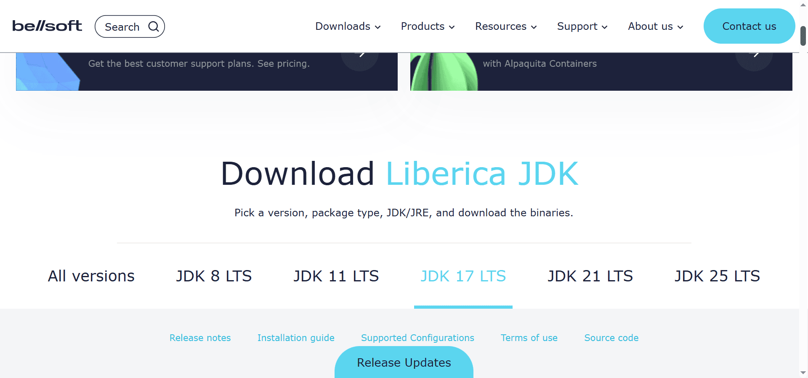
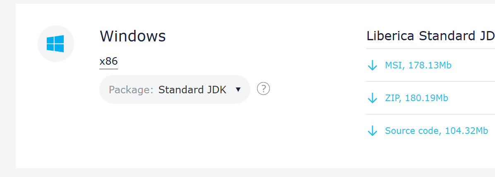
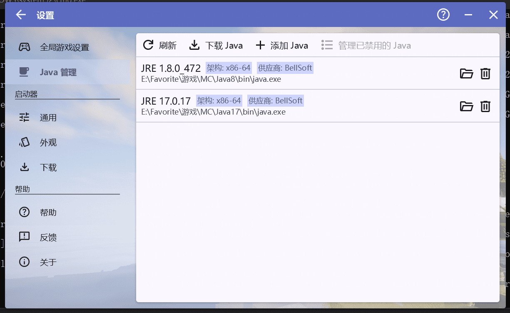
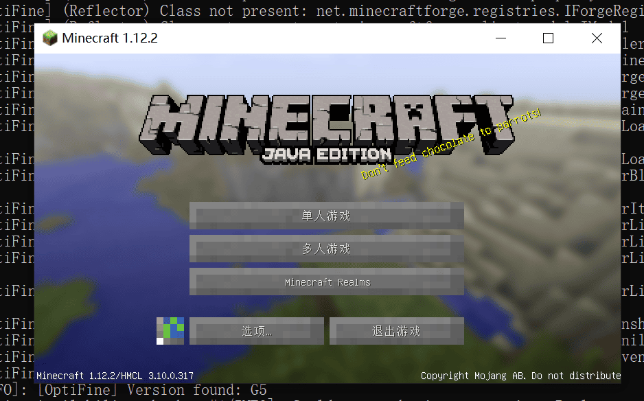
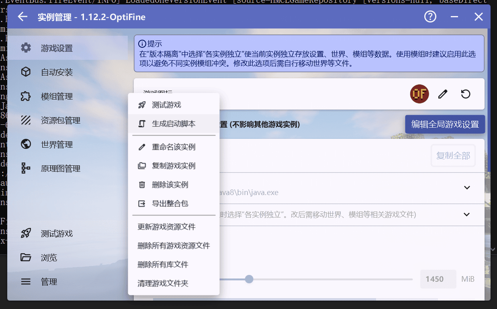

开始
或许你有这么一个需求——把MC装进U盘里面，在任意电脑任意网络环境下玩一下
经过我在互联网上的搜索和时间，总结出这样一种可行方案：
此教程只讨论Windows+未安装Java的环境下使用U盘玩MC，使用HMCL启动器
下载启动器
此处选择HMCL，因为知名度高且不想PCL2还要再依赖别的运行库
使用exe版本的HMCL会要求你安装Java，与需求不符，因此要使用jar版本的HMCL
官网已经删除了HMCL的jar文件，所以要到Github Release下载
下载Java
无论是启动HMCL还是启动游戏都要使用Java
我们可以到这个网站下载，先别急着操作，跟我来
我们先下滑找到这个选择版本的地方，选择Java17，运行HMCL至少需要Java17

先不要点击下面的Windows下载
先往下滑，找到这个玩意

也不要急着下载，先把Package切换到Full JRE，再点击右边的下载zip
根据你要游玩的版本，可能还要下载其它版本的Java，比如我玩1.12.2就还要下载Java8，如果你玩1.18~1.20就不需要额外下载别的版本了
把文件解压好，放在U盘里面
启动HMCL
可以直接敲命令，也可以先创建一个.bat文件（文件名可能需要你手动更改）
@echo off
.\Java17\bin\java.exe -jar .\HMCL.jar
直接运行，打开HMCL
自己下载MC版本，不教
修改Java版本
开始之前有一点需要注意，如果你的版本不能用Java17，就要修改Java版本
进入设置 > Java管理

这个时候你应该只能看到一个JRE17.0.17，就需要你点击添加Java，找到目录，选择Java8/bin/java.exe即可
测试一下，成功启动（HMCL默认自动选择java版本，出错就到全局游戏设置里面把Java指定成对应版本）

生成启动脚本
你要是懒得每次都要先打开HMCL或者带上Java17的话，可以直接生成启动脚本
点击 实例 > 管理 > 生成启动脚本 即可

然后找AI帮你改成相对路径
这是我的：
（有个参数--username zero，你要用的话直接修改成你自己的用户名就行）
就是这么简单，祝大家玩的愉快！